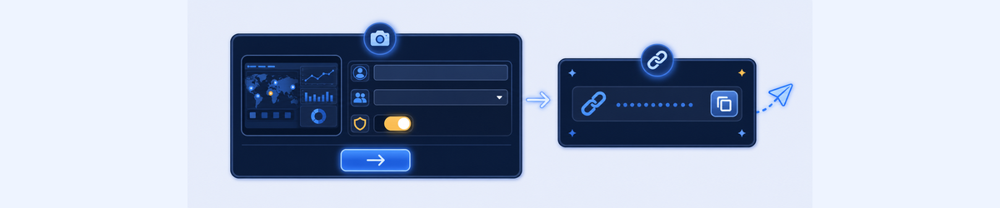
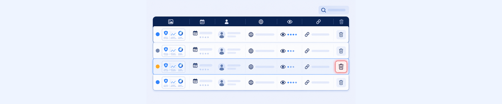

Lab 10: Sharing ZDX Snapshots
LAB 10
Scenario: You need to share a ZDX user performance report with a manager who does not have ZDX portal access. Create a shareable snapshot URL, configure privacy settings, and then manage the snapshot in the portal.
THINK FIRST · ZDX SNAPSHOT SHARING
ZDX Snapshots solve a real operational problem: how do you share a complex ZDX report with someone who doesn’t have portal access? The snapshot is a read-only URL, valid for a defined time, with optional data obfuscation for privacy.
- A ZDX Snapshot URL is accessible by anyone with the link, even outside your organisation. In what business scenarios would you choose to enable Obfuscate Data, and what does obfuscation actually hide?
- You can set a snapshot validity period (2 hours, 1 day, etc.). What factors would guide your choice of validity period for different use cases?
- The ZDX Snapshots management page shows a View Count column. What operational value does this metric provide to an administrator managing shared snapshots?
Task 10.1: Prepare User Report
1 Open a User Report to Share
- In the ZDX Admin Portal, click Dashboard › Self Service Dashboard.
- In the Notifications Sent table at the bottom, click on a Username to open their user report.
My Questions
My Notes
Task 10.2: Generate Report Snapshot & Copy Snapshot URL
2 Create a Shareable ZDX Snapshot
- Scroll to the top of the user report page and click Share Snapshot.
- In the Share ZDX Snapshot dialog, enter:
- Name:
Student <Student ID>(replace with your assigned Student ID) - Valid for: 2 Hours
- Obfuscate Data: Checked (green)
- Name:
- Click Next.
- Click Copy URL to copy the snapshot URL to your clipboard.
- Click Close.
- Optionally: open a new browser tab and paste the URL to view the snapshot.
Warning: ZDX Snapshots can be accessed by anyone with the link, even outside your organisation. Always confirm whom you are sharing with before sending the URL.

My Questions
My Notes
Task 10.3: Manage ZDX Snapshots
3 View and Delete Snapshots
- In the ZDX Admin Portal, go to Analytics › ZDX Snapshots.
- Use the Search bar to find the snapshot you just created.
- Review the Status column (Active, Initiated, Expired, Snoozed).
- Click the Trash icon to delete the snapshot you created.

My Questions
My Notes
MENTAL NOTE
ZDX Snapshot = read-only URL of a ZDX report, no login required. Configure: Name, Valid For (2hrs to indefinite), Obfuscate Data (hides usernames/device names). Copy URL → share. Manage: Analytics › ZDX Snapshots → search, check Status (Active/Expired/Snoozed), View Count, delete. Security: anyone with the link can view it — use Obfuscate Data for external sharing.